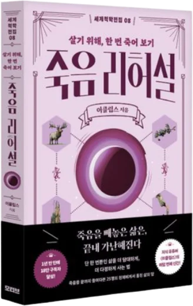
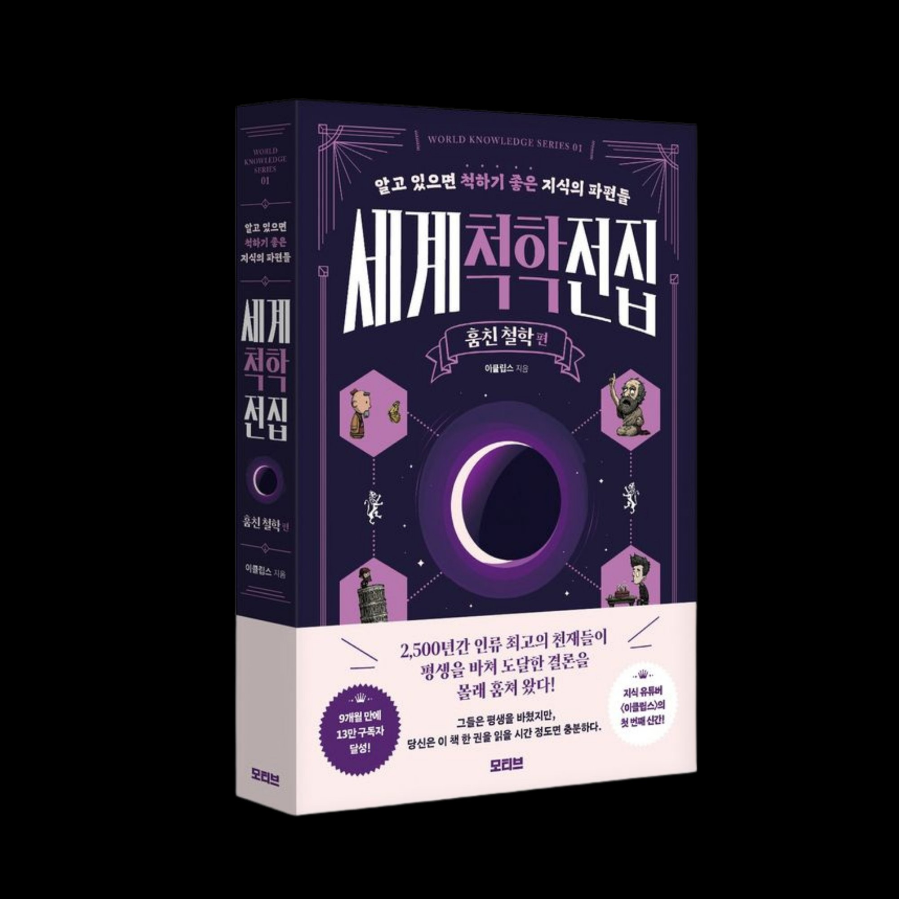
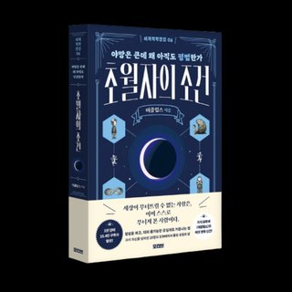
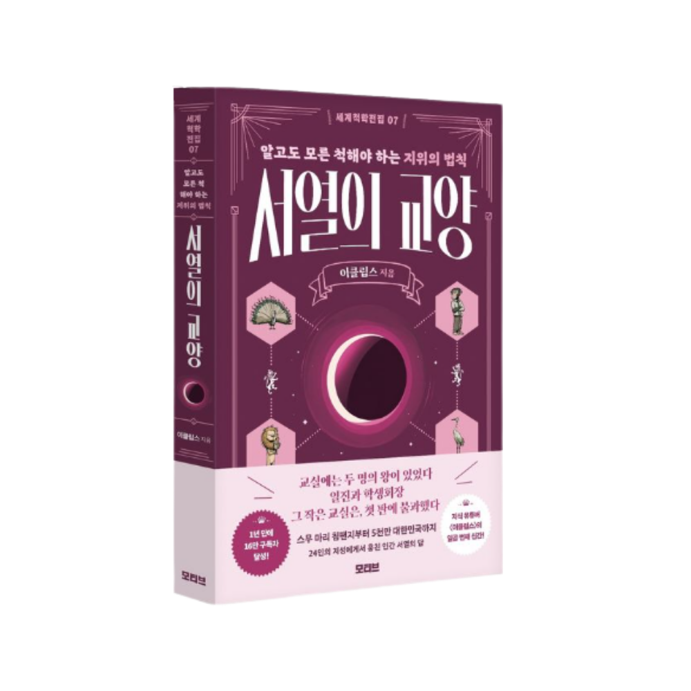

←
속이는 나, 속는 나
STAGE 1
1/5
STAGE 1
당신의 선택
그다음 벌어지는 일
발견한 원칙
다음으로
당신은
이미지로 저장하기
친구한테 시켜보기
탐험 지도로 돌아가기
가장 오래된 자기기만, 죽음. 그 앞에서 눈을 돌리지 않은 25명의 사유.

세계척학전집 08
죽음 리허설
살기 위해, 한 번 죽어 보기
시리즈 더 보기

훔친 철학 편

초월자의 조건

서열의 교양